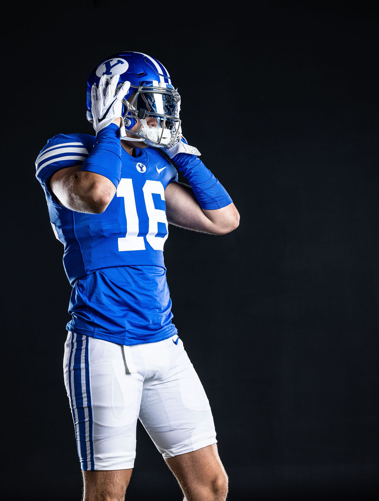

The Game That Shaped Me

#16 · BYU Cougars · Big 12 Conference
Football has been a constant in my life since I was a kid growing up in Utah. The sport demands everything from you — physical toughness, mental sharpness, and the ability to trust the people beside you no matter what. Suiting up for the BYU Cougars in the Big 12 Conference is something I don't take for granted.
After two years serving as a missionary in the Republic of Kiribati, returning to the gridiron meant more to me than ever. Every rep, every film session, every early morning lift is a privilege — and I play like it.
What the Game Teaches You
Football is more than X's and O's. Here's what every player learns on the journey from high school to Division I:
- Discipline & Routine
- 6 AM lifts before class, every day
- Film study — understanding the "why" behind every play
- Balancing 20+ hours of football with a full course load
- Team Trust
- You win as a unit, not as individuals
- Accountability to 100+ teammates drives your best effort
- Learning to follow before you lead
- Resilience Under Pressure
- Bouncing back from injury or a rough game
- Performing in front of 60,000+ fans in LaVell Edwards Stadium
- Staying locked in when the game is on the line
- Goal Setting & Process
- Weekly improvement goals set with position coaches
- Season goals vs. individual game focus
- Using adversity as data, not discouragement
BYU Football Highlights
BYU has a storied football tradition — including a national championship in 1984. Watch some of the program's most electric moments below.
BYU Football Highlights
BYU Football Highlights
BYU Football Highlights
NFL Stats Dashboard
Football is as much about numbers as it is about heart. Explore an interactive NFL statistics visualization below — powered by Tableau Public.

Data via Tableau Public. Interact with filters to explore player stats.
Test Your Football IQ
Think you know football? I built a trivia game to put your knowledge to the test. Answer 10 questions about NFL history, records, and stats. How many can you get right?
Play the Football IQ Quiz →